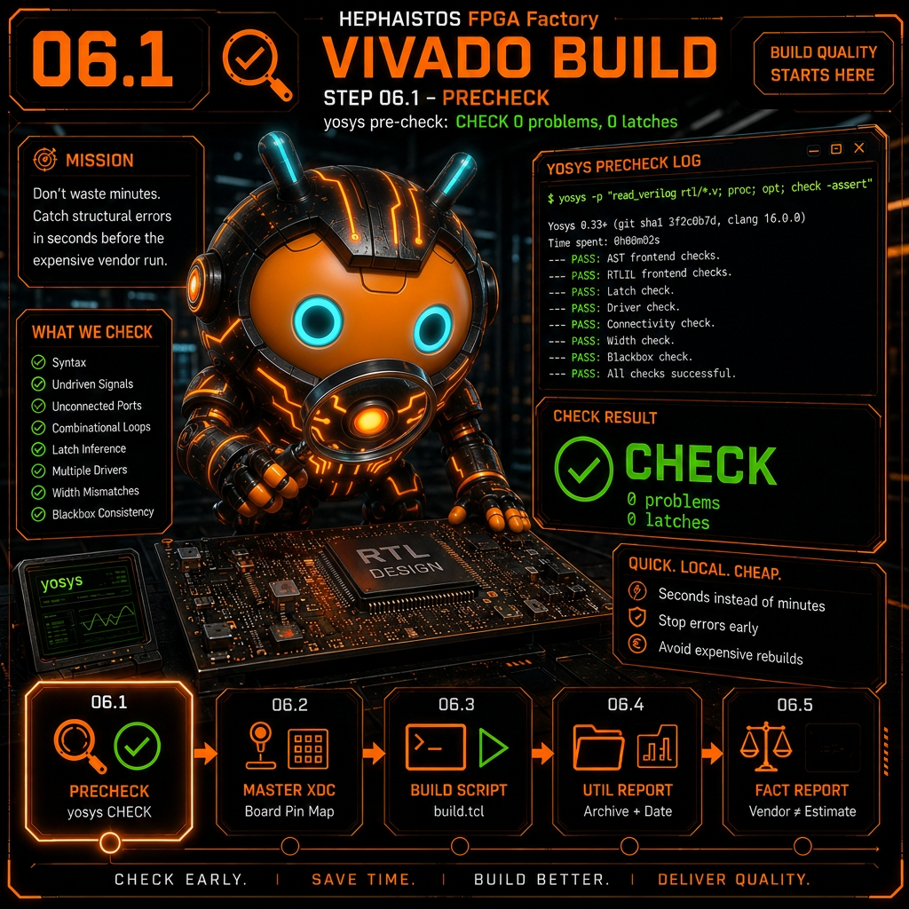
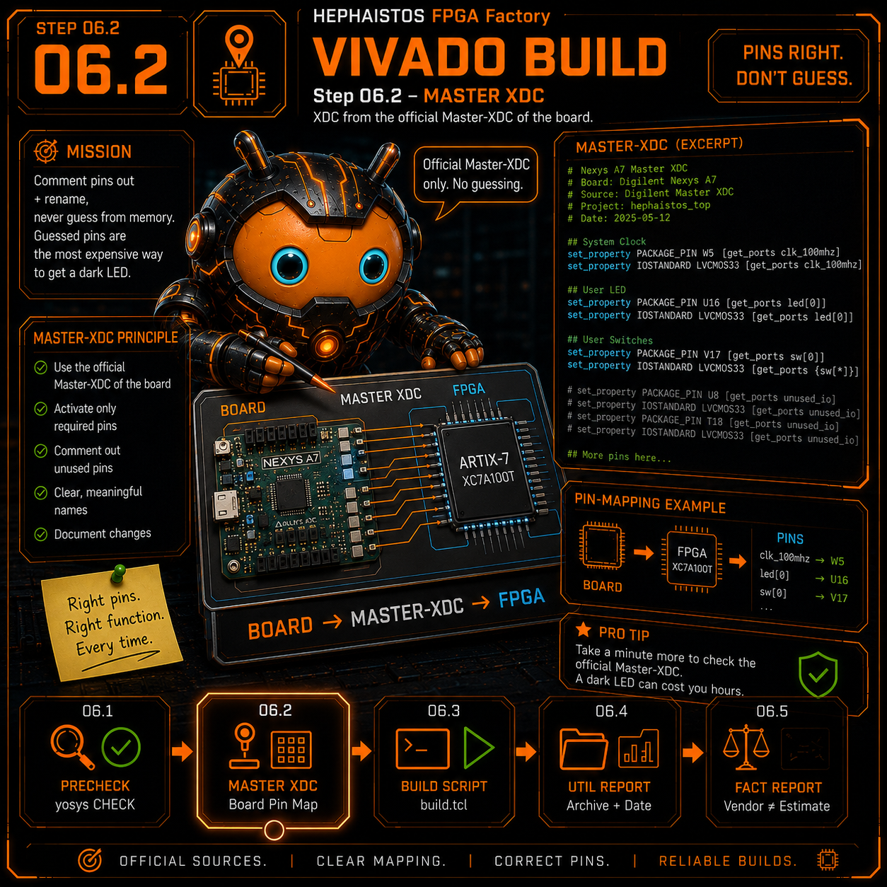
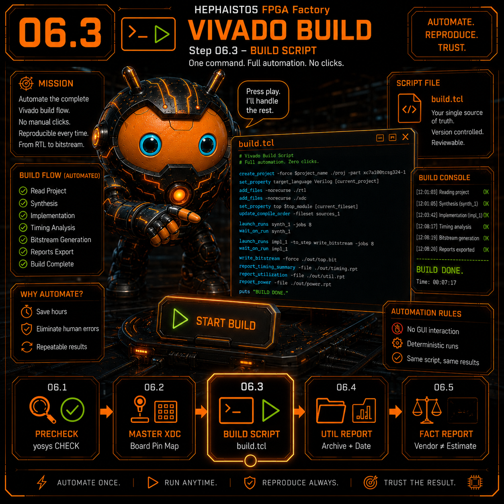
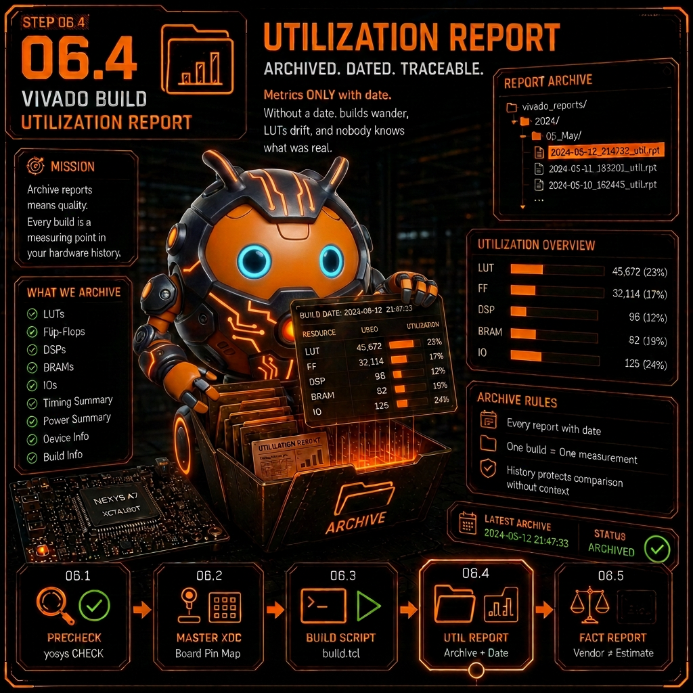

06 Vivado Build
Unterschritte 6.1 - 6.5
← Zurueck zur Uebersicht

6.1 yosys-Vorprüfung: CHECK 0 problems, 0 Latches
Prüfaufgabe
yosys-Vorprüfung: CHECK 0 problems, 0 Latches
Beweis-Artefakt
yosys-Log
Die schnelle lokale Vorprüfung fängt Strukturfehler in Sekunden, bevor der teure Vendor-Lauf Minuten frisst.

6.2 XDC vom offiziellen Master-XDC des Boards abgeleitet
Prüfaufgabe
XDC vom offiziellen Master-XDC des Boards abgeleitet
Beweis-Artefakt
XDC-Kopf-Kommentar
Pins auskommentieren+umbenennen, nie aus dem Gedächtnis tippen — geratene Pins sind die teuerste Art, eine LED dunkel zu lassen.

6.3 Build als Skript, reproduzierbar (keine Klick-Folge)
Prüfaufgabe
Build als Skript, reproduzierbar (keine Klick-Folge)
Beweis-Artefakt
build.tcl
Ein Build ohne Skript ist nicht wiederholbar — und in drei Wochen unbeweisbar. TCL rein, Klick-Folge raus.

6.4 Utilization-Report archiviert, datiert
Prüfaufgabe
Utilization-Report archiviert, datiert
Beweis-Artefakt
*_util.rpt
Kennzahlen NUR mit Datum. Ohne Datum vermischen sich Builds, LUT-Zahlen „wandern", und niemand weiß mehr, was wahr war.
6.5 Vendor-Zahlen vs. Schätzungen getrennt ausgewiesen
Prüfaufgabe
Vendor-Zahlen vs. Schätzungen getrennt ausgewiesen
Beweis-Artefakt
Report-Notiz
yosys schätzt, der Vendor-Report ist Fakt. Nie mischen — ohne Black-Box-Annotation verschätzt sich Fmax um Faktor 2.